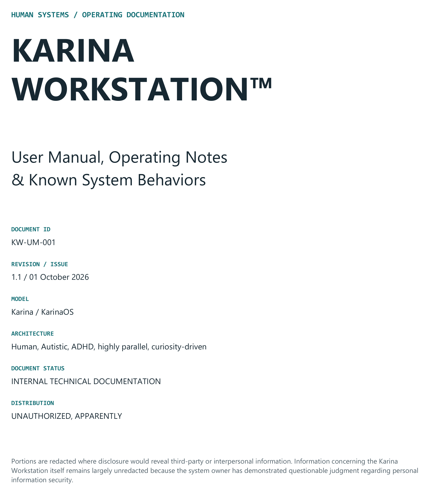
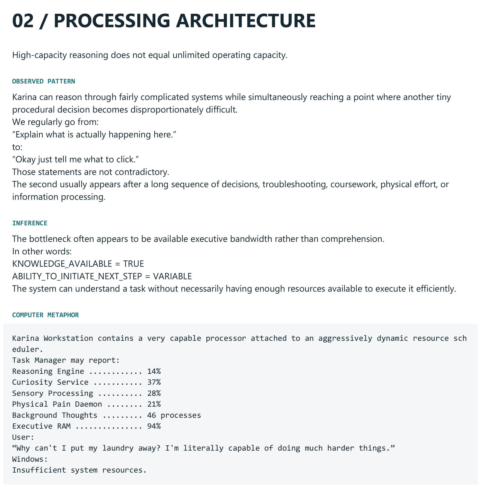
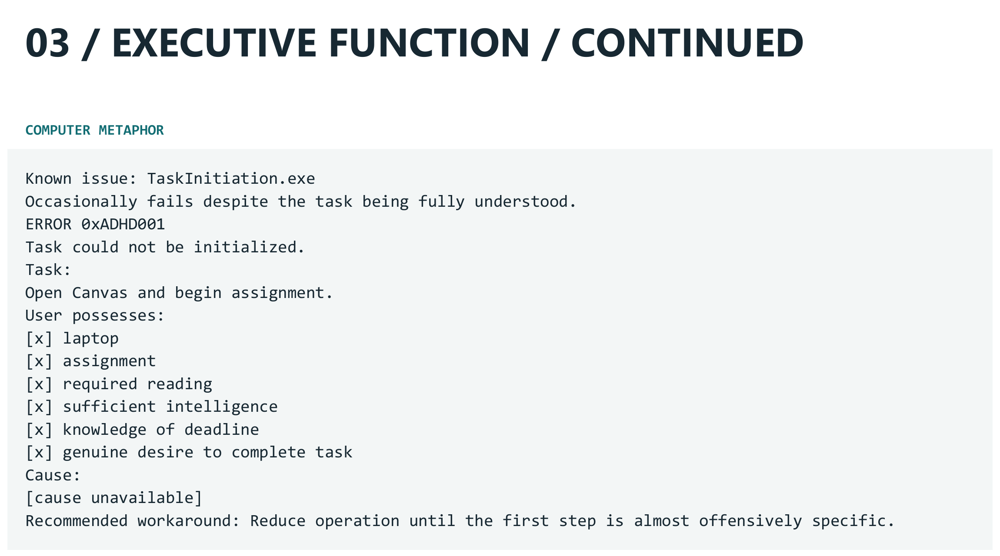
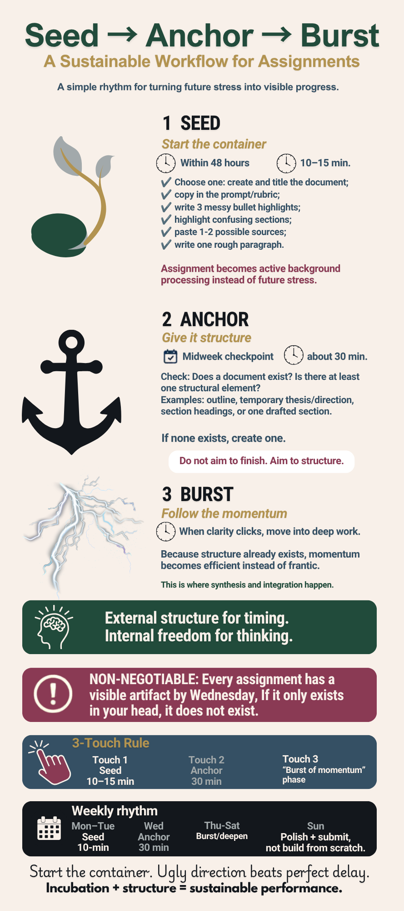
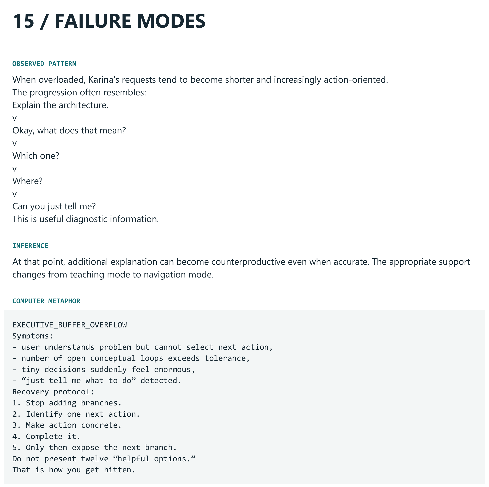
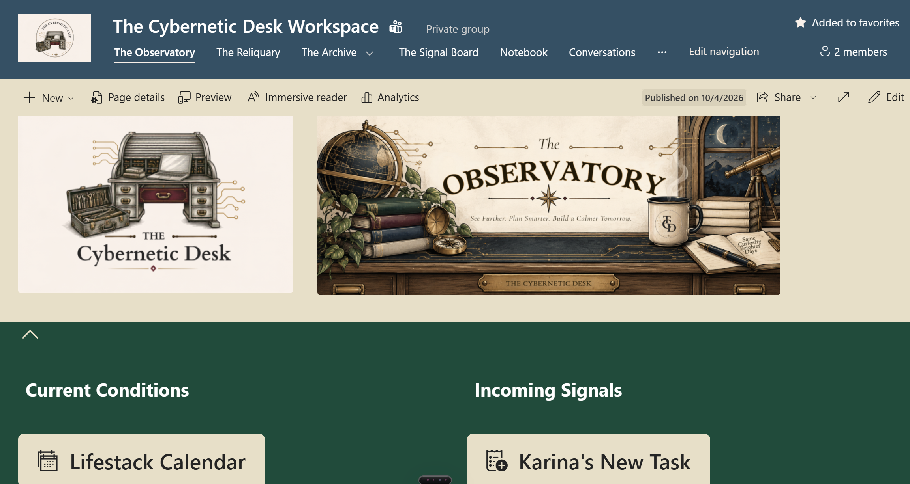
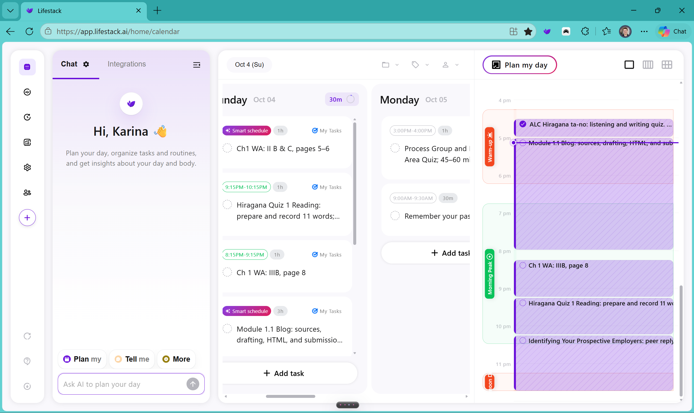
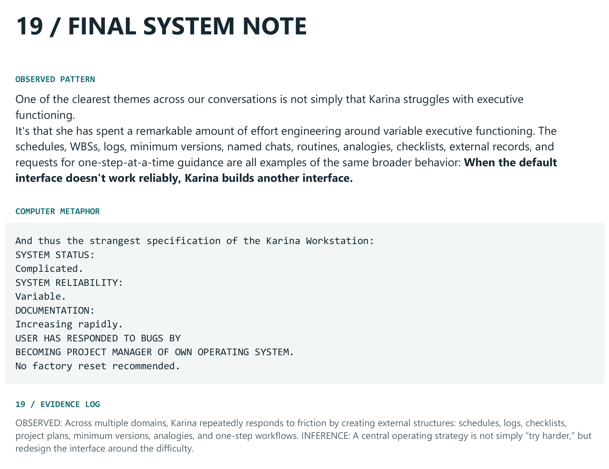

Leaked from KarinaOS™: The System Is Working Exactly as Designed. Unfortunately...
KARINAOS™ INTERNAL REVIEW
Subject: Getting coursework done
Status: Leaked
First recommendation: "Try harder."
Engineering response: "We already tried that update. What, exactly, are we changing?"
Being a student sounds easy when you leave out the student.
Receive assignment. Do assignment. Submit assignment.
Three steps. Beautiful. Practically a brochure.
Then I enter the process.
I need to understand the instructions, find the reading, connect the ideas, decide where to start, and remember which website wants which submission. Other responsibilities compete for the same hours. My energy does not arrive in equal amounts every day. Somewhere in there, I also need to eat.
So I build systems: schedules, assignment maps, checklists, and places to store information. There is even a Karina Workstation user manual. Apparently, once you give enough technology a personality, you eventually become the technology.
I call this KarinaOS™.
Underneath the dramatic branding is a real design question: how can I spend less time figuring out how to do the work and more time actually doing it?

A Pile of Useful Things Still Needs a Plan
Systems thinking means looking at how connected parts affect each other and create a result. It also means asking how that result changes what happens next.
Instead of blaming the first thing that looks broken, I can ask: What is this system supposed to do? What parts contribute to that outcome? How do they interact? What else affects them?
Holt (2023) explains that understanding the relationships between system elements matters as much as understanding the elements themselves. An interface is where information or material passes between those elements (p. 6).
That sounds technical, but the idea becomes easier to see when I treat KarinaOS™ as a model.

The manual represents processes such as reasoning, curiosity, sensory processing, physical demands,
background thoughts, and executive resources as competing processes inside a very questionable Task
Manager. Obviously, my brain does not literally run CuriosityService.exe. The joke works
because the model represents something real: several conditions can interact while I am trying to
accomplish one apparently simple task.
For this example, the system I am examining is my coursework process. Its purpose includes learning and submitting appropriate work. Canvas, GitHub, course materials, schedules, and other tools interact with that process, even when I draw some of them outside the system boundary.
A system's boundary defines what is included in the study. Holt (2023) notes that different people may draw that boundary differently (pp. 8–10). That choice matters. If I model coursework as nothing more than “student receives assignment and student completes assignment,” I have created a very tidy model.
When the Simple Model Stops Working
At the beginning of this post, I reduced coursework to three steps: receive assignment, do assignment, submit assignment. Linear thinking follows that same kind of straight path: A leads to B, then B leads to C.
That is not inherently bad. Clear procedures often need a linear sequence. Fetch the repository, edit the file, preview it, commit it, and push it. Those steps have an order for a reason.
The problem comes when I assume that the ordered steps explain the whole system.
The KarinaOS manual contains an excellent example.

According to the incident report, the system possesses:
- a laptop,
- the assignment,
- the required reading,
- knowledge of the deadline,
- sufficient intelligence,
- and a genuine desire to complete the task.
And yet TaskInitiation.exe may still fail.
Cause: ¯\_(ツ)_/¯
The joke exposes a problem with the simple model. If possessing the necessary resources and wanting to complete the assignment were enough to reliably produce task initiation, the operation should succeed.
It does not always succeed.
That means the model needs more information.
Suppose I put off an assignment because I have not found a direction yet. Waiting leaves less time to explore the topic. Less exploration produces less clarity. Less clarity makes starting feel harder, so I wait longer.
The result has now fed back into the original problem.
Holt (2023) identifies unmanaged complexity, failed communication, and poor understanding as connected causes of system failure. Each can contribute to the others (p. 14). “Started late” describes an outcome. Systems thinking asks what interactions helped produce it.
That question is much more useful than “Why can't I just do the thing?”
Change the System, Not Just the Lecture
Once I look at the problem as a system, I can experiment with changing its conditions. That is where my Seed → Anchor → Burst strategy comes from.

The Seed is a short first visit to the assignment. I might create the document, copy the prompt, write three messy thoughts, or highlight something confusing. It takes about ten to fifteen minutes.
The Anchor is a midweek check. Does the document exist? Does it contain an outline, headings, sources, or some visible direction? If not, I create something tangible.
The Burst is where I follow the momentum when the ideas begin connecting.
The goal is not to force myself to produce a polished introduction on command. The goal is to change the starting conditions. Instead of expecting “begin assignment” to mean “understand everything and start writing the final product,” I give the thinking somewhere to land.
STARTUP INSTRUCTIONS:
Open document. Add one useful thing.
Complete understanding may install later.
Linear thinking still has a role here. Seed, Anchor, and Burst provide a path through the work. Systems thinking helps me understand why changing that path might change the larger outcome.
The Same System Does Not Always Need the Same Interface
KarinaOS also changes state.
The manual documents one failure mode as EXECUTIVE_BUFFER_OVERFLOW.

When resources are available, I might ask:
“Explain the architecture.”
As those resources disappear:
“Okay, what does that mean?”
“Which one?”
“Where?”
Eventually:
“Can you just tell me?”
The underlying person has not been replaced halfway through the conversation. The state of the system has changed.
That matters when designing an interface.
A detailed explanation can be useful when I have the resources to process it. During overload, that same explanation can add another problem to solve. The better interface might provide one concrete next action.
That idea scales beyond KarinaOS. A digital environment should not merely contain all necessary information. Designers also need to consider how people encounter it and what they must do with it.
This is one reason I appreciated seeing the design of this course itself. In the course walkthrough, Bjorge (n.d.) explains that information in a previous version of the course interface could become lost during scrolling. The revised design breaks material into shorter pages, tabs, and smaller assignment sections. She even encounters and fixes a navigation issue during the walkthrough. Holt (2023) distinguishes essential complexity, which belongs to the system, from accidental complexity, which can result from inefficient people, processes, or tools (p. 15). Understanding systems engineering requires effort. Hunting around an interface for the assignment instructions adds a different kind of effort.
A designer can study a complicated system and still give the user a simple path through it.
KarinaOS Needs an Environment
This is also how I am approaching The Cybernetic Desk Workspace, my SharePoint environment for organizing coursework.

The design question is not simply, “Where can I store my syllabi?”
It is: How does information become useful work?
How does a syllabus become deadlines? How does a deadline become preparation? How does an assignment become a Seed task, an Anchor checkpoint, and eventually a submission?
Lifestack gives me another view of that environment by moving assignments into actual blocks of time.

Giving this blog post three hours means those hours are no longer available for something else. The calendar makes that relationship visible so I can inspect and adjust it.
More features, however, do not automatically make the system better.
CHANGE REQUEST: Add more reminders.
Expected result: Nothing gets forgotten.
Possible result: User now needs a reminder to check the reminders.
NASA's systems engineering guidance emphasizes evaluating the whole design and balancing competing needs rather than optimizing one part at the expense of another (National Aeronautics and Space Administration [NASA], 2016). A reminder can function perfectly while making the overall experience worse. A dashboard can display every assignment while still failing to answer, “What should I do next?”
For my workspace, better questions are: Does this reduce repeated planning? Can I find the next action? Can I trust the deadline? How much effort does maintaining this feature require?
The icons may be beautiful. They still need to earn their place.
KarinaOS Is Not Karina
This is where model-based systems engineering, or MBSE, becomes especially interesting.
The International Council on Systems Engineering (INCOSE, n.d.) describes MBSE as the formalized application of modeling to support activities such as requirements, design, analysis, verification, and validation throughout a system's life cycle. Holt (2023) explains that in a traditional document-based approach, documents contain information about the system. In MBSE, a model holds relevant information and represents how it fits together (p. 33). KarinaOS gives me an unexpectedly useful way to think about this distinction because KarinaOS is not actually me.
It is a model.
The manual selects observable behaviors, recurring interactions, resources, constraints, and failure states and represents them using a ridiculous computer metaphor. It deliberately leaves things out.
That does not automatically make KarinaOS an MBSE model. My personal documentation does not suddenly
become a formal engineering methodology because I named something TaskInitiation.exe. Holt
(2023) also emphasizes that SysML and MBSE are not the same thing (p. 55). A model needs a defined method
for creating, checking, changing, and using it.
But the manual helps me understand why models are useful.
A useful model does not need to reproduce every detail of reality. Holt (2023) argues that a model should contain enough useful information to help develop a successful system rather than simply collecting everything possible (p. 33).
The KarinaOS manual even contains a section called Things This Manual Does Not Establish. It cannot prove whether every behavior comes from autism, ADHD, physical state, stress, environment, personality, or some interaction among them.
The model is incomplete.
So is every useful model.
Its purpose is not to become the human. Its purpose is to give me something I can inspect.
The System Is Working Exactly as Designed
Systems thinking has changed the question I ask.
Instead of:
“Why can't I just do the thing?”
I can ask:
“What relationships are producing this outcome?”
Where is information getting lost? Where is unnecessary friction being introduced? What changes when resources decrease? Which parts actually need to be connected? Where would a small intervention change what happens next?
That does not mean every difficulty can be engineered away. It means I have a better framework for deciding what is worth redesigning.
The final observation in the Karina Workstation manual says:
“When the default interface doesn't work reliably, Karina builds another interface.”

That may be the most useful thing I have learned from accidentally becoming the operating system.
Schedules, assignment maps, Seed checkpoints, external storage, Lifestack, and The Cybernetic Desk are not attempts to create the world's most complicated planner. At least, they are not supposed to be.
They are attempts to design an environment that interacts better with the system using it.
The goal is not:
Try harder.
The better engineering question is:
What, exactly, are we changing?
KARINAOS™ REVIEW CLOSED
Approved goal: Less repeated planning. More actual work.
Next action: Seed the assignment.
Unnecessary new features: Under observation.